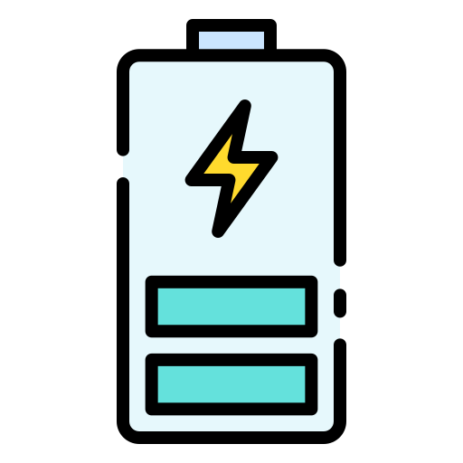

Principal Investigator
Chen-Jui (Ben) Huang (黃貞睿), Ph.D.
Email: bencjhuang@gmail.com
Office: Chemical Engineering Department, Taiwan Tech
Links: Google Scholar | ORCID | LinkedIn
Biography
Dr. Chen-Jui Huang (黃貞睿) will be joining the Department of Chemical Engineering at National Taiwan University of Science and Technology (Taiwan Tech) as an Assistant Professor in August 2026. He is currently a Postdoctoral Researcher at the Pritzker School of Molecular Engineering, The University of Chicago, working with Prof. Ying Shirley Meng, and a Resident Associate in the Imaging Group at Argonne National Laboratory's Advanced Photon Source.
Dr. Huang received his Ph.D. in Chemical Engineering from Taiwan Tech in 2021 under the supervision of Prof. Bing Joe Hwang, with a dissertation on "Exploring Electrochemical Energy Materials by in-operando/situ Spectroscopy and Imaging Techniques." He also spent one year as a visiting student researcher at Stanford University in Prof. Hongjie Dai's group (2016-2017).
His research expertise spans advanced battery materials, synchrotron X-ray characterization (XRD, XAS, XPS, tomography), and in-situ/operando techniques. He has extensive experience leading collaborative research projects funded by industry (LG Energy Solution, BMW) and government agencies, and has mentored over 20 graduate and undergraduate students.
Research Interests
- All-Solid-State Battery Materials and Interfaces
- Anode-Free Lithium Metal Batteries
- operando/in-situ Synchrotron X-ray Spectroscopy (XAS, XRD, XPS)
- X-ray Micro-Computed Tomography (µXCT) and 3D Imaging
- Transmission X-ray Microscopy (TXM)
Education
-
Ph.D. in Chemical EngineeringNational Taiwan University of Science and Technology (台科大化工系) | 2016–2021Supervisor: Prof. Bing Joe Hwang
-
B.S. in Chemical EngineeringNational Taiwan University of Science and Technology (台科大化工系) | 2012–2016
Experience
-
Postdoctoral ResearcherPritzker School of Molecular Engineering, The University of Chicago | 2023–presentSupervisor: Prof. Ying Shirley Meng
-
Resident Associate, Imaging GroupAdvanced Photon Source, Argonne National Laboratory | 2024–present
-
Postdoctoral ResearcherChemical Engineering Department, Taiwan Tech (台科大化工系) | 2022–2023Supervisor: Prof. Bing Joe Hwang
-
Visiting Student ResearcherChemistry Department, Stanford University | 2016–2017Supervisor: Prof. Hongjie Dai
Graduate Students

Research focus on solid-state battery interfaces using operando X-ray absorption spectroscopy and electrochemical characterization.
Investigating solid electrolyte interfaces and electrochemical performance of all-solid-state batteries.
Developing operando characterization methods for anode-free battery architectures using 3D X-ray tomography.
Studying electrode degradation mechanisms in lithium-ion batteries using multi-scale characterization techniques.
Undergraduate Researchers
Assisting with battery cell assembly and electrochemical testing protocols.
Supporting materials synthesis and characterization experiments.
Alumni
Our alumni section will be updated as group members graduate and move on to exciting new opportunities in academia and industry.
Join Our Team
We are always looking for motivated researchers to join our group. Opportunities are available for postdoctoral researchers, graduate students, and undergraduate researchers.
View Open Positions